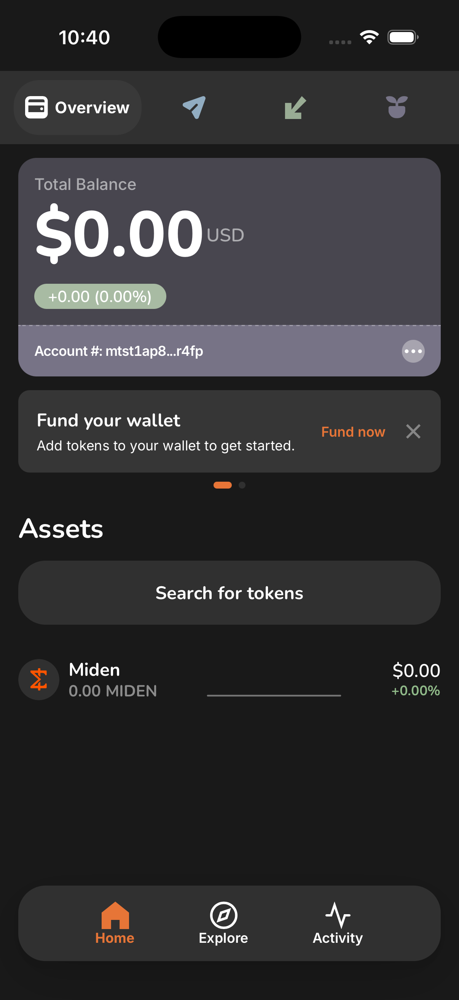

Finish the loaf.
Then keep the crust firm.
Bread doesn't need a new look. It needs one look. The identity is already here — warm paper, graphite ink, a single confident orange, a playful hand-made mark. The wallet feels amateur because three half-built visual generations are speaking at once. Crust is the governing system that finishes the migration already underway and holds every surface — including Earn, Bridge and Browser — to one language.
The thesis
Self-custody is money most people are afraid to hold. The visual language has one job: make sovereign, private money feel calm, legible and trustworthy — a well-made everyday object, not a trading terminal. Bread earns trust by being warm at the edges and precise at the core: playful and human where you arrive (onboarding, empty states), quiet and exact where you move money (balances, amounts, addresses, review). That polarity is the whole system.
Visual DNA — what we keep
This is not a reskin. These decisions are already right and are load-bearing to Bread's identity. The system preserves and finishes them.
White ground, warm cards
The page is plain #FFFFFF; the warmth lives in the surfaces that sit on it — #F7F4F0 cards, #EFEAE4 wells — over warm graphite #3F3F3F text. Not the cold zinc/white of every shadcn dashboard, but not a tinted page either: the warmth reads as material, on the things you touch, rather than as a wash over everything.
One Bread orange — and it is not the button
#E77537 is the brand, the mark, and the way state is shown: an active tab, a progress fill, a selection pip. It is not the primary action. White on it is exactly 3.00:1 — conforming only as large text, with no margin — so the action fill is the neutral --action (13.59:1 light, 15.56:1 dark), which frees orange to be the brand. Devnet’s slate-grey remains the environment tell.
Playful display type + the toast mark
Rounded Nunito headlines and the illustrated "toast-B" logo carry the human warmth. Kept for headings, onboarding and empty states.
The newest kit is already good
components/ui/* — BalanceCard, ActivityRow, the semantic --surface/--tx-*/--status tokens. This generation becomes canonical; the older two retire into it.
Onboarding is the north star
The onboarding is the most unified, harmonious surface in the app — so the rest of the product is derived from it, not styled beside it. Every screen should read as the same family as these three.
What makes it harmonious
- Warm cream ground, calm, generous negative space
- Rounded Nunito headlines — friendly, confident, human
- Soft spot-illustrations: muted palette + orange accents
- One full-width rounded primary; quiet ghost secondary
- A single orange, used sparingly and structurally
Carry it into the whole app
- Same headline font & weight for section titles
- Same generous spacing rhythm — let content breathe
- Same soft, rounded surfaces (cards, rows, sheets)
- Illustration / spot moments for empty & success states
- Numbers in the brand font, so the balance is the same family — not a code readout
Six principles that make decisions
Finish the system, don't restart it
Three component generations coexist. The newest (components/ui) is the reference; everything old merges into it. Every choice below is migration-first so tested behavior is preserved.
Warm paper, graphite ink, one orange
A single warm-neutral ramp replaces five stray greys. Orange is structural — primary action, active state, focus — never expressive filler.
blue.* (which resolves to orange), logoOrange, six primary-orange-* vars and 191 hardcoded hexes → --accent + one neutral ramp.Numbers are the product — set them in mono
Balances, amounts, addresses and hashes are the thing a wallet is for. They get a precise monospaced, tabular treatment. GeistMono already ships in the repo, unused.
One warm family, onboarding-led
The onboarding's harmony is the whole app's language, not a separate style. Every surface stays in the same warm family; precision comes from tabular figures, clear hierarchy and restraint — not a colder, more technical register.
Restraint is the aesthetic
Elegance comes from a small vocabulary rigorously applied — a restricted radius set, a 4px spacing grid, two elevation levels.
Security you can read
Trust is built by legibility: one address truncation rule, copy affordances everywhere, status said exactly once, privacy and guardian cues that read at a glance.
positive/pending/negative), one truncation helper across every surface.What it is not
Deliberately not Coinbase (navy + electric blue, dense trading chrome), not a neobank template (glassy gradients, giant marketing type), not a shadcn dashboard (zinc neutrals, generic radius), not an industrial newspaper theme (cold, stark). Bread is warm, quiet and precise.
The audit
The "amateur" feeling is measurable. These are counts from the current earn-integration tree, not impressions.
-[…] utilities; 96 are one-off text-[…]getRandomColor()Three generations, one app
| Generation | Where | Vocabulary | Verdict |
|---|---|---|---|
| Gen-3 (newest) | components/ui/* | accent-primary, text-primary-token, surface-*, status-* | canonical |
| Gen-2 (default) | components/* | primary-500, heading-gray, rounded-full, framer-motion | merge up |
| Gen-1 (legacy) | app/atoms/* | primary-orange, raw gray-XXX, react-modal, tippy | retire |
| Bypass | screens/earn-flow/* | ad-hoc <div> + raw hex (#EFEFF2, #DDD4CE…) | rebuild on kit |
lib/ui/button shadcn primitive + Reown/AppKit UI; Browser is a self-contained sub-app. The fix is structural, not cosmetic.Color
One warm-neutral ramp, one orange, a tight semantic set. Every value below is a live CSS variable powering this page.
Brand & action
Rule — orange is structural, not expressive. Use for exactly one primary action per view, the active nav/tab state, focus rings, and the brand mark. It is never a background fill for decoration, never two oranges in one view. Devnet swaps the whole accent to slate-grey #7286A0 as the environment signal.
Warm neutral ramp — replaces five stray greys
Text: ink primary · ink-2 secondary (65%) · ink-3 tertiary/placeholder (40%). Surfaces step paper → surface → surface-2 → surface-3. Rules: rule (8%) hairlines, rule-strong (16%) emphasis.
Status — four meanings × three roles — data-status scopes the pair
The bug this prevents: a single status value cannot serve text (needs 4.5:1), a fill behind a label, and a wash behind ink text. The shipping app proves it — --status-positive is used all three ways and its text role measures 2.19:1. Same split already solved for --accent/--accent-ink. The on-fill label is --paper, so one declaration is correct in both themes. Every ratio below is measured, not asserted.
--posink/dot on page 5.84 light · 8.01 dark · ink on wash 5.25 / 6.28
--warnink/dot on page 5.73 light · 9.17 dark · ink on wash 5.13 / 7.48
--pendink/dot on page 5.86 light · 5.06 dark · no wash role
--negink/dot on page 6.61 light · 6.32 dark · ink on wash 5.82 / 5.42
Transaction hues — kept from Gen-3 (the one good sub-system)
dark: overrides on auto-flipping tokens — the current codebase's #1 dark-mode bug source.Typography
Three roles, each with a job. The upgrade that buys the most credibility for the least risk: money and addresses move to monospace, using the GeistMono already sitting in the repo.
--num) · balances & amounts · tabular + lining figuresNumber font — see them, then pick
The hero balance rendered in each candidate, on the real card. Addresses stay Geist Mono in all three. Which reads most in harmony with the onboarding?
Decided: A (Nunito), wired to the single --num token — balance, amounts and deltas now render in the onboarding headline face, so numbers join the same family. C (Geist Mono) is ruled out on evidence: Cash App, the benchmark for big-balance minimalism, uses a high-x-height grotesque for numerals, not a monospace, and reserves its brand face for balance moments while the system face handles UI. Geist Mono is retained for addresses, hashes and ids only. Tabular + lining figures (tnum/lnum) still apply — that's a figure setting, not a monospace font.
Named roles & scale
| Role | Family | Size / weight | Use |
|---|---|---|---|
| display-xl | Nunito 900 | 40 / -0.02em / 1.02 | Onboarding headline |
| display-lg | Nunito 800 | 26 / -0.02em | Page & section titles |
| title | Nunito 800 | 17 | Card / row group titles |
| body | Inter 400–500 | 15 / 1.5 | Prose, descriptions |
| label | Inter 600 | 13–14 | Controls, metadata |
| numeric-hero | Nunito 800 tnum lnum | fit 40→28 | Balance |
| numeric | Nunito 700 tnum lnum | 14–16 | Amounts, fiat, deltas |
| address | Geist Mono 500 | 11–13 | Addresses, hashes, ids only |
tailwind.config.ts currently maps sans/serif/mono all to Inter, and Nunito+Inter load from Google Fonts at runtime. Crust self-hosts all three and wires mono to GeistMono.Spacing & grid
A 4px base unit. One page gutter. A short allowed scale — ~350 arbitrary spacing values collapse into these.
Page gutter = 24px
Every screen's horizontal padding is space-6 (the current px-6, now the only allowed value). Content max-width holds on tablet/desktop targets.
Vertical rhythm
Section gaps space-6/8; in-card stacks space-2/3; row padding space-3. No h-9.5, no pt-4.5 one-offs.
Screen composition — the three-zone model
A spacing scale governs gaps between elements. It says nothing about how a screen distributes its leftover space — which is where layouts actually go wrong. This is the missing rule.
| Zone | Behaviour | Sizing |
|---|---|---|
| 1 · Chrome (status bar, progress, header) | Fixed to the top | safe-top 62px + its own height |
| 2 · Content | Absorbs all slack and optically centres in it | flex:1 + justify-content:center |
| 3 · Action zone | Pinned to the bottom | max(16px, env(safe-area-inset-bottom)) |
- Slack belongs to the content zone, never below it. Top-anchoring the content and letting the remainder pool above the buttons is the single most common way a step screen reads as unfinished. If a screen has one obviously empty band, this rule is being broken.
- Optical centring, not geometric. The content block sits ~7% above true centre — the eye perceives geometric centre as slightly low. (Classic typographic setting; same reason a book's text block sits above centre.)
- Negative space is composed, not leftover. This is the ma (間) principle from the palette research: the gap is active presence and must be deliberate. A void that merely fell out of the layout algorithm is not ma — it's a bug.
- Measure: centred body copy caps at 30ch. Beyond that the ragged edges stop reading as a block.
- Hero illustration: 30–38% of screen width (≈120–150px at 402pt). Smaller and it can't anchor the composition, which is what makes the space around it read as empty.
Shape & radius
Eleven live corner values become four. Each maps to a role, so radius stops being a free choice.
| Token | Value | Applies to |
|---|---|---|
| radius-sm | 8px | chips, inputs, small controls, icon squares |
| radius-md | 12px | cards, list rows, prompts, menus |
| radius-lg | 16px | balance hero, bottom sheets, modals |
| radius-full | 999px | primary buttons, pills, avatars, FABs |
Retired: rounded-5, rounded-10, rounded-[10px], rounded-[14px], rounded-[20px], rounded-[22px], rounded-3xl, rounded-4xl and friends. Squircle app-tiles (Browser favourites) use radius-md.
Elevation & surfaces
Bread is a paper product — it prefers hairline rules over heavy shadows. Two elevation levels, plus the signature balance surface.
Rule-bordered, no shadow. Default for cards, rows, inputs. The workhorse.
Prompts, the floating bottom-nav pill. A whisper of lift.
Bottom sheets, modals, the balance card. The only strong shadow.
#191919 ground, so elevation there is communicated by surface step (paper→surface→surface-2) and rule contrast, with shadows kept only for true overlays. This is why the neutral ramp has explicit dark surface steps.Motion
Motion explains where things come from, then gets out of the way. Springs are the primary mechanism — the app's presets are derived from iOS UIKit (response/dampingRatio → stiffness/damping). Tweens are the fallback for opacity and colour, where a spring adds nothing.
dur-fast 150ms / base 200ms / spatial 320ms and ease-spatial cubic-bezier(.22,1,.36,1). None of those exist in the codebase. The real values below are read from src/lib/animation/{durations,easings,springs}.ts. The app has a well-built motion system that its own components bypass — the fix is to use it, not to invent a parallel one.Springs — src/lib/animation/springs.ts, use these first
| Preset | stiffness / damping / mass | Use |
|---|---|---|
snappy | 500 / 38 / 1 | button presses, taps, capsule chrome |
standard | 322 / 32 / 1 | default screen & sheet motion (≈ response .4, damping .89) |
sheetPresent | 380 / 34 / 1 | bottom sheet present / dismiss |
morph | 220 / 30 / 1.2 | shared-element transitions (slow, soft) |
pill | 320 / 30 | tab-bar pill |
magnetic · settle · dragRelease | 380/26 · 260/30 · 420/40 | bubble fly-to-corner · final landing · post-drag rebound |
Tweens — durations.ts + easings.ts, for opacity & colour
| Token | Value | Use |
|---|---|---|
fast | 180ms | colour, hover, tap feedback, cross-fades |
normal | 280ms | label swaps, size eases, progress |
slow | 420ms | larger area changes |
extraSlow | 600ms | ambient, non-input-driven |
easeOutCubic | cubic-bezier(.16, 1, .3, 1) | iOS soft-out — entering content |
easeInOut | cubic-bezier(.65, 0, .35, 1) | symmetrical, balanced |
easeInCubic | cubic-bezier(.32, 0, .67, 0) | exits, small state changes |
easeOutBack | cubic-bezier(.34, 1.56, .64, 1) | slight overshoot (bubble pop-in) |
Page transitions use their own pair — 540ms / cubic-bezier(.32,.72,0,1), Apple's iOS parallax — see below. That curve is also what vaul already uses for sheets, so the two agree.
.12 .15 .18 .2 .24 .28 .3 .32 .39 .4 .5) with only one component using a duration token; six easing curves for equivalent work; four different specs for “push a screen in from the right”; four different animated-pill specs; and prefers-reduced-motion honoured in roughly half the app — with the two highest-traffic transitions (tab switch, home carousel) importing springs directly instead of useSprings(), so they run at full amplitude for users who asked for less.Page transitions — tap Play on each
_UINavigationParallaxTransition), so it is an observed constant, not a contract, and its curve is genuinely unsourced — anyone quoting “UIKit uses easeInOut” is guessing. (2) M3’s duration/easing system is now legacy, superseded by spring physics; CSS cannot spring, so the token durations remain the right target for a WebView — a known divergence, not a mistake.99.5% → 0 from the trailing edge (WWDC24’s word; auto-mirrors in RTL) while the outgoing parallaxes 0 → −33% and dims to .8. That second layer is what makes it read as Apple rather than a generic slide — and it is the part our app is missing today.540ms / cubic-bezier(.32,.72,0,1), from Ionic’s maintained reproduction of UIKit’s parallax. UIKit’s own 350ms is private and its curve is unsourced, so citing a shipped implementation is safer than guessing a curve. The curve is front-loaded, so it covers most of the distance early and reads faster than 540ms — copy the duration without the curve and the app feels sluggish.
standard). This is the onboarding step case. Material’s don’t: never use a full-width slide for hierarchical screens — “excessive for a high frequency transition”.x:8% — that is the violation.Recommended spec — graded by what actually backs it
| Transition | Duration | Easing | Direction | Grade |
|---|---|---|---|---|
| Push (forward) — CHOSEN | 540ms | cubic-bezier(.32,.72,0,1) | in 99.5%→0 trailing · out 0→−33% + dim .8 | direction [SPEC] · duration+curve = shipped Ionic impl · UIKit curve [CONTESTED] |
| Pop (back) | same, or ~15% shorter | same family | exact reverse, RTL-mirrored | reverse [CONSENSUS] · RTL [SPEC] |
| Lateral (steps/peers) | 280ms | cubic-bezier(.2,0,0,1) | unison, one axis | pattern [SPEC] · numbers [CONSENSUS] |
| Top level (tabs) | 90ms out → 150ms in | accelerate → decelerate | none | Material [SPEC] · cross-platform [CONTESTED] |
| Sheet up / down | 250–300 in · 200–250 out | emphasized-decel / -accel | from its own edge | [SPEC] |
| Container transform | 500 in / 400 out | emphasized | bounds morph | values [SPEC] · restraint [CONSENSUS] |
| Extension popup 360×600 | 150–200ms, or fade | standard | same rules, shorter travel | [CONSENSUS] |
| Reduced motion | ≤100ms (or 1ms) | linear | none | [SPEC] WCAG AAA + both platforms |
Implementation — framer-motion, not CSS
The app already ships framer-motion, so express Apple’s parallax through it rather than adding a second animation system. This replaces all four of the competing “push from right” specs the audit found.
// src/lib/animation/transitions.ts
export const iosPush = { duration: 0.54, ease: [0.32, 0.72, 0, 1] } as const;
// A push is TWO layers. Sign flips for RTL and for back.
const dir = isRTL ? -1 : 1;
const back = direction === 'backward';
// incoming
initial = { x: `${dir * (back ? -99.5 : 99.5)}%` };
animate = { x: '0%' };
// outgoing ← the part we're missing today
exit = { x: `${dir * (back ? 99.5 : -33)}%`, opacity: back ? 1 : 0.8 };
// reduced motion: no travel, cross-fade only
if (reduceMotion) { initial = { opacity: 0 }; animate = { opacity: 1 }; exit = { opacity: 0 }; }Navigator’s PushExitPosition is byte-identical to FocusPosition, so the outgoing card animates zero pixels — there is no parallax and back is indistinguishable from forward. (2) Onboarding slides ±1vw ≈ 4px on a 402pt screen, which costs 200ms and shows nothing. (3) Three other push specs (CSS .mobile-page-enter, TabLayout’s spring, the framer tween) collapse into this one. (4) Apple’s push is interactive — swipe-back, and an interrupted push converts to a pop rather than cancelling; that is a larger change than a tween swap and is not covered here.App consolidation — survive / merge / retire, per transition
Audited from the shipped code. Same verdict model as the component map: what becomes canonical, what folds into it, what gets deleted.
| Transition | Today | Verdict |
|---|---|---|
SegmentedActionBar pill | layoutId FLIP, .24s easeInOut | SURVIVE canonical pill — but move to springs.pill |
HomeSwipeContainer drag | framer drag + springs.standard | SURVIVE — add useSprings() (ignores reduced motion today) |
| vaul drawer | 500ms cubic-bezier(.32,.72,0,1) | SURVIVE — add a reduced-motion rule (vaul ships none) |
Navigator push/pop | x:8%, 150ms; exit configs are byte-identical to resting | MERGE → iosPush. Back animates zero pixels — fix first |
CSS .mobile-page-enter | translateX(8%), 150ms ease-out, enter-only, 17 routes | RETIRE → iosPush (no exit animation exists at route level) |
| Onboarding step | ±1vw (≈4px!), 200ms easeInOut | MERGE → Lateral 280ms. 4px is invisible — it costs 200ms and shows nothing |
TabLayout tab switch | x:8% + spring, no AnimatePresence | REPLACE → fade. Material forbids sliding top-level; also ignores reduced motion |
TabPicker pill | framer default spring 550/30 (bouncier than everything else) | MERGE → springs.pill |
TokenDetail timeframe pill | spring bounce .15 duration .4 — a 3rd pill spec | MERGE → springs.pill |
BottomNav | colour crossfade only, no indicator | DECIDE — inconsistent with the pill directly above it |
ProgressIndicator | 0.3s [.4,0,.2,1] (M3 legacy curve) | MERGE → durations.normal + easeInOut |
DappExpanderOverlay | 390ms bespoke curve, animates left/top/width/height | REWRITE — layout-animating; use FLIP/layout |
Navigator present/dismiss | y:25vw path — no route registers it | RETIRE dead code |
TransactionProgressModal | headless — returns no markup | RETIRE from docs; the live equivalent is the routed page |
Onboarding <Header> AnimatePresence | wraps a non-motion component — inert | RETIRE dead wrapper |
Navigator’s back direction — a back navigation that looks identical to forward is the one defect users feel as “confusing” rather than “plain”. 2. Tab switch → fade; highest-traffic transition in the app and currently against Material’s explicit don’t. 3. Route the two highest-traffic transitions through useSprings() so reduced motion actually applies. 4. Collapse the four push specs into iosPush. 5. The three pill specs into springs.pill. Everything else is cleanup.Don’ts that bite in a WebView
- Never animate
left/top/width/height. Google measured 50% dropped frames vs 1% fortransform. Same forbox-shadowand largeblur— paint-bound, not compositable. position:fixedchildren travel with a transformed ancestor. Per CSS Transforms 1, anytransformmakes the element a containing block for fixed descendants, so a pinned tab bar inside the animated page slides with it. Checked: ourBottomNavsits outsideTabLayout’smotion.div, so we are clear — but it is one refactor away from breaking.- Never
animation: noneunder reduced motion — collapse the duration to 1ms, ortransitionend/animationendnever fires and the router stalls. - Don’t size transition containers in
vhon Capacitor iOS:KeyboardResize: nativeresizes the WebView, andvhwith it, mid-flight. - Don’t cross-fade two half-transparent full screens — Material: fade out fully before fading in, or you get “messy and distracting frames”.
will-changeis a last resort, added before and removed after; parked permanently it burns GPU memory.- Reduced motion removes the movement, never the meaning — the status colour change and the tick stay.
UINavigationControllerHideShowBarDuration = 0.33s (universally repeated, absent from Apple’s docs) · “Material shared axis = 300ms” — the most-repeated M-number on the web and not in the M2 or M3 text; Google’s shipped Android defaults are 450ms (shared axis, fade through) and 500/400ms (container transform) · “iOS Reduce Motion replaces pushes with a cross-dissolve” (undocumented) · translate3d()/backface-visibility hacks (folklore from dead engines). And cubic-bezier(.4,0,.2,1) is M3 legacy, not “the Material curve” — one major version behind.Interactive — tap to feel it
Every motion below runs on the tokens above. Tap the controls; toggle the theme to feel it in dark.
Why size carries the signal: the width change makes the active surface unmistakable at a glance, and the label only exists while it's needed — no permanent clutter. The tab's hue arrives on activation, so colour is confirmation, not decoration. Collapsed tabs stay 46×38px, well above the 24×24 AA target floor, and the label fades in 80ms behind the width so text never stretches.
Component motion — the Delight–Impact Curve in practice
Benji's rule: delight scales inversely with frequency. Actions you do constantly get featherweight polish; rare, high-stakes moments earn the big one. Each card is tagged with where it sits.
tnum.innerHTML, so nothing can pop. The chip eases between its two natural widths (94px → 44px, measured once then animated over 280ms) instead of snapping. In the app use framer-motion's layout prop — it FLIPs the same delta using transforms only, which is compositor-safe.prefers-reduced-motion — travel and shimmer collapse to near-instant, matching the existing .mobile-page-enter fade fallback. Turn on Reduce Motion in the OS and reload to verify.Viewports & adaptivity
Nothing here is designed to a single frame. The reference is iPhone 17 · 402×874pt (our test device), and every screen must hold from iPhone SE 375pt up to Pro Max 440pt — plus the browser-extension popup, which is narrower and much shorter than any phone.
| Target | Points | Role |
|---|---|---|
| Extension popup (Chrome/Firefox) | 360 × 600 | Hardest case — shortest height; the action zone competes with content |
| iPhone SE (2nd/3rd gen) | 375 × 667 | Smallest phone — narrowest gutters, least vertical room |
| iPhone 13 mini / 14 | 375 × 812 | Narrow but tall |
| iPhone 15 / 16 | 393 × 852 | Common baseline |
| iPhone 17 — reference | 402 × 874 | What we design and screenshot against |
| iPhone 16/17 Pro Max | 440 × 956 | Largest — must not just stretch |
| Android | ~360–412 dp | Covered by the same range |
Adaptive rules
- Width is fluid; the scale is not. Cards, rows and the action zone fill the available width. Type sizes, radii and touch targets never scale with the viewport — a 375pt screen gets the same 19px CTA label, not a shrunken one.
- Gutter steps once.
24pxat ≥360pt, dropping to16pxbelow 360 (extension popup). It never goes lower — that's the only responsive spacing rule. - The action zone is pinned, never scrolled away. On short viewports (SE, popup) the content area scrolls beneath a sticky footer so the primary action keeps its position — which is what makes the "same Y on every screen" rule survive small screens.
- The balance fits, it doesn't wrap. The hero amount measures itself and shrinks within a fixed range (~40→28px) rather than wrapping or truncating — long balances are a real case, and tabular figures keep it stable while it resizes.
- Pro Max gets more breathing room, not bigger components. Extra width becomes margin and list density, not inflated cards. Above ~500pt the content column caps so it never becomes a stretched phone layout.
- Safe areas are additive. Bottom padding is
24px + env(safe-area-inset-bottom); the pinned zone respects the home indicator without hard-coding a device height. - Extension popup is the design constraint, not an afterthought. If a screen works at 360×600 it works everywhere — so that's the case to check first.
Same screen, four targets — gutter, pinned CTA and type scale all holding
360 × 600
375 × 667
402 × 874
440 × 956
Components
One canonical component per job, with real states. Each carries a consolidation verdict: what survives, what merges in, what's retired. Duplicates counted in the audit are mapped here.
Buttons — 6 impls → 1 + icon
#E77537 is exactly 3.00:1, which conforms under SC 1.4.3 only as large text (≥18pt, or ≥14pt bold = 18.66px bold) — so every CTA label is set at 19px/700. Drop below that and the button silently becomes non-conformant, because the margin at 3.00:1 is zero. Small labels on an accent fill must use --on-accent-sm (near-black, 5.78:1) instead — the guardian Default band and the active stepper dot do. For irreversible actions (send/sign confirm) .critical uses --accent-critical #D9661F — defined in both themes, because a light-only definition made the confirm button invisible in dark mode.surface-2), or a borderless ghost (text + accent). Borders on tap targets read heavier and less minimal — hairline rules are reserved for structural separation (cards, rows, dividers), never for buttons, chips or pills. This retires the legacy outlined secondary (border-2 border-primary-orange) outright.| Impl | File | Verdict |
|---|---|---|
| Button (framer, token-based) | components/Button.tsx · 59 files | canonical |
| FormSubmit / FormSecondary (outlined) | app/atoms/* | → size + filled secondary (drop the border) |
| shadcn button (bridge only) | lib/ui/button.tsx · 3 files | decide in/out — don't leave both |
| CircleButton | components/CircleButton.tsx | icon standard |
| ~18 ad-hoc screen buttons | earn-flow, onboarding… | retire |
Button placement — one action zone, every screen
The primary action lives in a fixed bottom action zone — same gutter and same distance from the safe-area bottom on every screen — so it never jumps as you move between screens. The secondary/ghost action sits directly beneath the primary — matching the shipped Welcome screen — so the safe option occupies the bottom edge. On irreversible actions that ordering is a safety feature: an accidental tap at the very bottom hits Cancel, never "send funds permanently".
Spec: full-width primary · gutter 24 · bottom 24 + env(safe-area-inset-bottom). Scrollable screens use a sticky footer; short screens pin it. Ghost/secondary sits directly above the primary, never below.
Sheet — one shared overlay, four uses
Every overlay in the app is this one component (lib/ui/drawer, vaul). It already ships the full anatomy — scrim, grab handle, DrawerHeader/Title/Footer — so consumers should pass content and padding, nothing else. Don’t re-skin the primitive.
Do
- Use the primitive’s default scrim (
bg-black/30 + blur,/50dark) — it’s what makes the sheet read as a layer. - Show the grab handle when the sheet is drag-dismissible, so the affordance is visible.
- Fit height to content. Cap at
max-h-[80vh]; if it needs more, it’s a page. - Dismissing an explainer is a secondary action — a filled-grey “Got it”, not a primary CTA competing with the screen’s real action.
Don’t
- Don’t kill the scrim.
GuardianInfoDrawersetsoverlayClassName="bg-transparent backdrop-blur-0", so the sheet floats with nothing behind it. - Don’t add a coloured top border. The same file adds
border-t-[6px] border-primary-500— on dark it reads as a warning banner, and it duplicates the orange rule below the intro. - Don’t stack two accent bars in one sheet. Separate with a hairline; accent is for actions.
- Don’t hand-roll a sheet. One library (vaul), one component — no second overlay language.
Chips, badges & status
| Impl | Note | Verdict |
|---|---|---|
components/Chip.tsx | interactive filter chip | survive |
lib/ui/badge.tsx (shadcn) | uses off-palette shadcn tokens | remap to status-* then canonical |
AccountTypeBadge.tsx | returns null | delete (dead) |
| inline hex pills (earn, balance delta) | bg-[#DDD4CE], bg-[#A8BBA3] | → badge primitive |
List rows
survive AssetListItem (assets) · ActivityRow (transactions). merge ListItem → CardItem (generic) and DetailRow ↔ ReviewRow (one key/value row).
Fields & inputs — focus ring is the accent; errors never rely on colour alone
Password strength — four tiers, one component, data-tier on the wrapper
Segment count and the label both change with the tier, so the meter never depends on colour alone (SC 1.4.1, Level A). Tier names are the shipped i18n keys. Amber is a new --warn token, not the existing --pend. Reusing --pend was a mistake caught in dark mode: --accent (hue 21°), --pend (15°) and the old --neg (9°) were all the same orange at the same lightness, so low and medium rendered identically and both read as brand colour. A warning tier is a genuine fourth meaning — pending, warning, error and success are four states, not three.
--neg--warn--posAmount entry — the wallet's most-used field
Selectors
Selection — one treatment per container shape
Three containers can be chosen in this product — a row in a list, a row under a heading, and a card — and each takes the treatment its geometry allows. This is not three designs; it is one idea (mark the chosen thing, move nothing else) fitted to three boxes.
.mlist carries 9px of inline padding, .mpad 16px..rad radio is the right control for a standalone choice in a form, but a list row is already a 44pt target whose whole width commits the choice — a ring inside it draws a second control around the same hit area. And a check in the value column puts the one element meaning “this is your choice” as far from the choice as the layout allows, arguing with the number beside it.| Container | Treatment | What carries the state | Why not the others |
|---|---|---|---|
Row in a list .mrow.sel in .mlist | Fill (bled) + pip + label 800 | pip, 3.02:1 / 4.21:1 | Outer ring would cross its neighbours |
Row under a heading .netrow.sel in .netpick | Fill + label 800 | the heading “Current” | Rows sit in two parents — a reserved slot would indent one group and not the other |
Card .mbc / .gcard / .ropt | 3px ring, outline-offset:3px | the ring’s presence | A card floats, so the ring has somewhere to sit |
.mrow.cur picker-only fill | — | — | deleted — 0 usages, described a distinction the markup had dropped |
| Pending note row | — | — | selection removed — Claim all is the only action, so no note is ever the chosen one |
Cards & surfaces
Liquid Glass — the material only reads with content behind it
Apple’s bar floats above content — HIG: its items “rest on a Liquid Glass background that allows content beneath to peek through.” A translucent bar over empty space is just a grey panel, so the material is demoed here over real content. Inset is Apple’s 21pt on all three sides, labels 11pt. Tap a tab — the bubble stretches along travel and settles rather than rigidly sliding, which is the part that separates it from a segmented control.
tabBarMinimizeBehaviorBottom nav — ranked, with the evidence tier for each claim
The current bar was called “too ugly”. Three measurable problems sit underneath that, so this is not only taste:
(1) its active state is #E77537 on #FBFBFB = 2.90:1, failing SC 1.4.3 for the label and SC 1.4.11 for the icon — and it is 5.86:1 in dark, so the defect is light-theme-only, which is how it survived review.
(2) it fires a 40px black shadow in both themes, contradicting this system’s own rule that dark uses surface-step, not shadow.
(3) it switches the label semibold → bold on activation, reflowing the text on every tab change.
Its px-13.5 padding also makes it ~367px wide on a 375px viewport — a near-full-width bar wearing rounded corners, which is why it reads neither as a bar nor as a capsule.
full, width:max-content · icon 24, label 11/13 at one weight · bottom max(12px, safe-area). Active = ink + pill + filled icon, so never colour alone.What the platforms actually say — SPEC Apple HIG: “Use a tab bar to support navigation, not to provide actions”, “Include tab labels”, “Prefer filled symbols”, and don’t hide tab items because it “makes your app’s interface appear unstable”. SPEC Material 3: three-to-five destinations, “All navigation items require a label text”, and a rendered Don’t for removing them; Android’s own LABEL_VISIBILITY_AUTO resolves to always-labelled at ≤3 items, and we have exactly 3 — at M3’s floor, so note it if a tab is ever removed.
Labels: always visible. This is the one question where both specs agree, so it is not a judgement call. Icon-only would be the worst option here — of our three, only Home is in NN/g’s near-universal icon set; “Explore” is precisely the ambiguous case. Active-only labels are right for SegmentedActionBar, which filters within a page where reflow is the affordance, and wrong for app-level nav, which should be geometrically stable.
No centre FAB for Send — the clearest call in the research, and spec-backed on both platforms (HIG’s “not to provide actions”; M3 puts the FAB right-aligned above the bar and says don’t cover the bar with it). Phantom, the closest comparable, put its composite money action lower-right, not centre. And sends are irreversible: a mis-tap on a nav control costs a tap, a mis-tap next to an irreversible money action costs money. Cash App looks like a counterexample and isn’t — its centre item is a destination tab in an app where paying is the product.
No library, and that is a real finding. Radix’s own docs say “Tabs should not be used for page navigation”; shadcn has no bottom-nav block (two requests sit unanswered); Ionic’s tab bar drags in a 20MB core and React Router 5; @react-navigation/bottom-tabs is impossible in a WebView. And because the mobile nav is redrawn as a native overlay in UIWindow / Android View land, the deliverable has to be a portable spec — numbers and spring constants — not a DOM component. We also deliberately avoid framer-motion’s layoutId: with three equal items the problem is a single translation, and layoutId on a position:fixed bar needs layoutRoot or the pill jumps once content scrolls, plus it only corrects border-radius when set via style, not a utility class. One persistent indicator translated by index, driven by the existing springs.pill (320/30, already documented as “footer tabbar pill”), ports to SpringForce().setStiffness(320f).setDampingRatio(0.839f) and .spring(response: 0.351, dampingFraction: 0.839) almost mechanically.
Headers & navigation
Banners & alerts — each pairs colour with an icon and a label (SC 1.4.1)
Empty, loading & error states
Failure screens — the highest-stakes surface in the product
A failed transaction is where trust is won or lost. Rules, straight from the Tier-2 evidence: say what happened in plain language, state explicitly whether the money moved, keep the technical detail available but secondary, and offer one obvious recovery. The personality layer recedes entirely here — no illustration, no cheerful tone.
Wallet-specific
Headers, sheets & the rest
| Family | Canonical | Consolidation |
|---|---|---|
| Headers (5 today) | TabHeader (top-level) + ScreenHeader (back/close) | NavigationHeader → ScreenHeader; earn headers retire |
| Sheets / modals (3 libs) | vaul lib/ui/drawer.tsx | react-modal + bespoke TransactionProgressModal migrate onto it |
| Amount entry (3) | AmountInput (already shared send+swap) | InputAmount → AmountInput; unify BigNumber validation |
| Tabs / segmented (4) | TabPicker + SegmentedActionBar | ImportTabSwitcher; merge TabSwitcher |
| Checkbox ×3 · Toggle ×2 | one each, token-based | collapse atom + component variants |
Screen patterns
Nine reusable screen skeletons. Every current flow is an instance of one — which is what makes the app read as a single product instead of nine.
- Onboarding step — progress dots · Nunito headline · illustration/mark · one primary + one ghost. (Welcome, Passcode, Guardian, Backup)
- Wallet overview — account switcher + network · balance hero · action bar · searchable asset list. (Home)
- Selection / list — TabHeader/back · search · rows · bottom-sheet picker. (Send recipient, token/contact pickers, address book)
- Amount entry — big mono numeric · available balance + Max · sticky Cancel/Next. (Send, Swap, Earn deposit)
- Transaction review — key/value DetailRows · fee · one primary confirm. (Send/Swap/Earn review)
- Progress & receipt — stepped status · summary badge · Hide/Done. (Generating transaction)
- Detail page — back header · hero value · metadata rows · explorer link. (Token detail, history detail, earn vault)
- Settings list — grouped rows · icon + label + chevron · dividers. (Settings, sub-settings)
- dApp surface — capsule/URL bar · webview slot · favourites grid. (Browser, EVM connect)
Screens
The system applied to the two screens you named first — current build (left, live screenshot) vs. proposed (right, built from Crust tokens). Information architecture and behavior are untouched; only the visual language changes.
Welcome
Welcome
to Bread!
Bread Wallet is a simple and secure way to manage your digital money privately.
Kept as shipped. Composition unchanged — 130px mark, 72px display headline, 20px body, vertically centred. Only the bottom changed: the system action zone (52px CTA, ghost beneath, max(16px, env(safe-area-inset-bottom)) clearance).
Home / Wallet overview


BalanceCard + SegmentedActionBar (the reference Gen-3 kit) — not the stale cream-grid/circular-button screenshot I first worked from. So this is refinement of an already-good screen, not a redesign: Crust removes the drift on top of good bones.Send → Review → Sign — where the Tier-2 evidence lands
The money path, composed entirely from components already in this system — graphite money hero, grey content blocks, the action zone, the stepper. Nothing bespoke. Each screen carries one peer-reviewed constraint.
Constraint: the recipient stays visible and editable while entering the amount — address errors are the highest-consequence failure, so it never scrolls out of sight.
Constraints: fee disclosed at the decision point (not after), and an explicit irreversibility cue in plain language. Confirm uses --accent-critical #D9661F with the near-black label (5.02:1) — a deeper fill than the standard CTA, because the money path should not sit at the conformance floor. Defined in both themes.
Constraint: personality fully recedes — no illustration, no celebratory copy while money is in flight. The primary action is demoted to neutral because there's nothing to confirm; the user is only leaving.
Deferred — structural redesigns (later track, not the look pass)
- Compact the top. Today the segmented action bar + balance card + account strip consume the first third of the screen before any content. Merging the action row into the card, or shrinking the stack, moves boxes — so it's a layout change, out of scope for the look-only re-skin.
- Earn overhaul. The one screen that warrants a true redesign (own duplicated header, a Recharts dependency, the densest hardcoded hex) — rebuilt on the kit as amount-entry + detail patterns.
- Send amount · Transaction review · Activity detail. Re-skinned now (look-only); structure revisited later only if needed.
All screens
The whole wallet, designed on the system. Every screen is composed from the documented components — graphite money surface, grey content blocks, the action zone, real in-repo icons and illustrations — at true iPhone 17 dimensions. Nothing here is a bespoke layout.
Onboarding
30
Mirrors the shipped STEP_TO_PROGRESS model: 4 steps (3 when the protection choice is skipped) — not the 7 I had invented. Detours never move the bar. Every screen the app ships is now represented, including the import path, the biometric fallback and the error states.
First run2
Welcome
to Bread!
Bread Wallet is a simple and secure way to manage your digital money privately.
Protection8
Choose how you want to protect your wallet
Set up your passcode
Create a 6 digit code
Confirm your passcode
Re-enter the same 6 digits
Confirm your passcode
Passcodes don’t match. Try again.
Only one more step!
Only one more step!
Your Wallet is ready!
Write down your recovery phrase within 7 days to fully secure your wallet.
Guardian & password5
Choose your Guardian
Select an option below
Choose your Guardian
Select an option below
Create password
Set a password to unlock your wallet
Create password
Set a password to unlock your wallet
Set Up Account Recovery
Choose how you want to recover your account if you lose access.
Wallet ready2
Creating your wallet…
This takes a few seconds. Keep the app open.
Your Wallet is ready!
Write down your recovery phrase within 7 days to fully secure your wallet.
We’ll remind you daily on the home screen.
Back up3
Back up your wallet
Save these 12 words and store in a secure place.
Back up your wallet
Save these 12 words and store in a secure place.
Verify Seed Phrase
Confirm you’ve saved your recovery phrase.
Import3
Import Wallet
Enter your wallet’s 12-word Seed phrase.
Import Wallet
Enter your wallet’s 12-word Seed phrase.
How would you like to recover this wallet?
Unlock2
Enter your passcode
Forgot Passcode?
Sign out and re-import your account, then create a new passcode.
Your funds live on the network, not on this device.
Extension5
Create password
Set a password to unlock your wallet
Choose your Guardian
Select an option below
Your Wallet is ready!
Write down your recovery phrase within 7 days to fully secure your wallet.
Welcome back
Forgot Password?
Your funds live on the network, not in this browser.
Home & overview
15
The resting state, and everything reached from the balance card. The card is the account: tapping it opens the list, and the list reaches one account's own sheet.
Overview4
Notices5
Accounts2
Token detail4
Send flow
17
Recipient → amount → review → result, with the picker sheets and the bridged variants hanging off each step. The recipient field is the spine of this flow — fixed at three lines with the type fitting the box, so pasting a 48-character address no longer pushes the actions, the resolution row and the network list down together. Two steps were removed rather than restyled: a second “Confirm recipient” screen that confirmed the address twice, and a Confirm button on the recipient step that a resolved row already stands in for. Cross-chain is drawn and 0% built — grep -rnwE "evm|EVM" src/ returns nothing, en.json holds no chain name, and SendTransaction.extraInputs is hard-narrowed to { recallBlocks?: number }, so every bridged screen here is a proposal.
Recipient9
Amount5
Confirm3
Cross-chain send
8
Every screen here exists only because the destination is not Miden. The shared steps stay in the send flow above — a scan is an input method whichever chain the address belongs to, and the amount and token controls are the same either way. What is different is that the wallet has to ask which chain, because a bare 0x… is valid on every EVM chain at once and the address carries no hint; then it has to quote a route, because the fee and the arrival time are a choice; and then it has to stop calling the send finished, because “Payment Sent!” is false while the money is in flight. None of it is built. grep -rnwE "evm|EVM" src/ returns nothing, en.json holds no chain name, and SendTransaction.extraInputs is hard‑narrowed to { recallBlocks?: number } so IBridgedSendExtraInputs cannot be populated — while IBridgeProvider, bridgeSpeedFast, bridgeSpeedSlow, bridgeRouteViaEpoch, bridgeRouteViaAgglayer and transactionRoute all ship and render nowhere. There is also no fee model anywhere in the wallet, so every fee and total drawn here is a specification rather than a readout.
Recipient & network4
Amount & route2
Confirm2
Contacts
8
One sheet, one list, one set of gestures. Everything happens here: the header adds, a row taps to use the contact, and a swipe reveals edit and delete. There is no separate manage mode — the send flow and Settings open the same sheet, because they were only ever the same list with a different title. That is a departure from the app, which has two: AccountsListDrawer for picking, titled Contacts, and an AddressBook drawer for managing, titled Address Book and carrying an always-expanded add form above the list. Nothing in the list is destructive. The shipped screen makes the whole row the delete trigger with nothing on it saying so (AddressBook.tsx:78); here delete is two deliberate steps, a swipe and a named confirmation. Two things block it: address-book.ts exports only addContact, removeContact and getContact, so editing does not exist at all — fixing a typo today means delete and retype — and WalletContact gained an optional network field that nothing yet writes, so a saved EVM contact still cannot remember which chain the user chose.
Pick2
Add & edit6
Receive flow
2
Address, QR and share. Receive is address-only since claimable notes moved to their own screen.
Receive2
Swap flow
6
In-protocol DEX swap. isSwapEnabled() is true, so unlike Earn this ships today.
Enter3
Confirm3
Activity flow
18
History, one transaction in detail, and claiming. Pending notes belong here rather than under Receive, matching the shipped split.
Activity list7
Transaction detail3
Claim & pending notes8
Claiming 1 of 2. You can leave this screen — claims finish on their own.
Earn flow gated off
3
Built and routed, but isEarnEnabled() returns false, so none of it is reachable. Kept as spec for a shipped-but-hidden feature.
vaults1
Vault detail1
deposit1
Settings & browser
17
Reached from Activity's header gear — Home has no header of its own, which is why Settings also appears as a ghost action in the accounts sheet.
Preferences5
Advanced5
dApps3
Networks4
Security & recovery
22
Everything gated behind an authentication step. Three of these screens open as a blank frame today — RevealSeedPhrase.tsx:111–113, RevealSecret.tsx:332–334 and EncryptedWalletFileWalletPassword.tsx:136–138 each return null while the hardware-protector probe runs, with no header and no spinner.
Reveal9
Your private key gives full control of this account to whoever holds it. Miden accounts cannot rotate keys, so a leaked key compromises the account permanently.
Your private key was cleared from the screen. Nothing changed — unlock again to show it.
Lock & passcode3
Enter current passcode
Your wallet, funds and recovery phrase stay the same.
Guardian2
Rotation is approved by your two on-device keys. The old Guardian is only notified.
Nothing cosigns your transactions and nothing can help you recover this account. If you lose this device and your recovery phrase, the funds are gone.
Reset & export5
Your accounts, keys and Guardian setup are deleted from this phone. Your funds stay on Miden and come back only with your recovery phrase.
Exported!
Account3
Removing it deletes its keys from this device. Without its private key you cannot bring it back, and your recovery phrase alone will not restore an imported account.
dApp browser
11
The tab labelled Explore in the bottom nav. Note the naming trap: src/app/pages/Explore.tsx is the wallet home, not this. On mobile and desktop, five of the eight request types a dApp can make have no consent UI at all — dapp.ts:1529–1531 throws unless isExtension().
Browser6
Can’t load this dApp
Check your connection and try again.
Requests5
Global states
10
Surfaces that belong to no single flow: the lock screen, connectivity, permissions and the migration walls. The connectivity banner is mounted once, at Explore.tsx:141, so going offline anywhere else in the app shows nothing at all.
Lock4
Welcome back
Checking Face ID…
Enter your passcode
Too many attempts
You entered the wrong passcode three times. Try again in
Wallet locked
Bread locks itself when you leave the app. Unlock to see your balance.
Connectivity & permissions3
Camera permission denied
Bread uses the camera only to read a Miden address from a QR code. Nothing is recorded and nothing is uploaded.
System3
Update Bread to continue
The Miden network has changed in a way this version cannot handle. Updating takes about a minute.
Wallet Reset Required
Miden Testnet has upgraded to bech32 account IDs to improve your experience. To keep using your wallet, please restore from a backup file or seed phrase, or create a new one.
Prototype
The screens, walkable. This frame shows a clone of the same nodes documented under All screens — there is no second copy of the UI to drift, so anything fixed there is fixed here. Click the real controls: the bottom nav, the action bar, a back chevron, or the primary button. Arrow keys step through a flow, Backspace goes back.
Constraints & evidence
Every constraint below is graded by how well it's actually supported. The point of this page is to stop us — me included — from dressing preference up as standard.
Tier 1 — Hard standards (numeric, normative)
These are not negotiable for a money app. Encode them in the tokens so conformance is structural, not remembered.
| Constraint | Value | Source |
|---|---|---|
| Text contrast | 4.5:1; 3:1 only for large text (≥18pt, or ≥14pt bold ≈ 24px / 18.66px bold) | WCAG 2.1/2.2 SC 1.4.3 (AA) |
| Non-text contrast | 3:1 for UI components, each state, focus indicators, and meaning-bearing icons | WCAG SC 1.4.11 (AA) |
| Pointer target | 24×24 CSS px minimum | WCAG 2.2 SC 2.5.8 (AA) |
| Pointer target (enhanced) | 44×44 — AAA, platform convention, not an AA requirement | WCAG SC 2.5.5 (AAA) |
| Colour alone | Never the sole carrier of information or state | WCAG SC 1.4.1 (Level A) |
rem alone scales with nothing. (Ionic ships rem everywhere and still had to add opt-in "Dynamic Font Scaling" — direct evidence.) -webkit-text-size-adjust is not Dynamic Type either; it controls text-inflation on non-mobile pages. Android is the inverse: WebView applies the OS font scale by default, but scales text only — rem spacing does not grow, and px gets multiplied too.Bottom action zone — the researched spec
The CTAs were originally flush to the screen edge. That's the single most common safe-area bug, and it has three independent causes worth stating.
| Property | Value | Why |
|---|---|---|
| Bottom padding | max(16px, env(safe-area-inset-bottom)) | Not 16px + env(). Additive is fine on iOS but gives 64dp of dead space on Android 3-button nav (48dp inset). max() degrades correctly everywhere: 34px iPhone, 24–48px Android, 16px on SE and in the extension popup. |
| Top padding / gutter | 16px | Material compact margin 16dp; UIKit systemMinimumLayoutMargins 16pt |
| CTA min-height | 52px (floor 48) | Above iOS 44pt default and Material 48dp minimum |
| CTA width | bar width (screen − 32px) | Current HIG says "avoid full-width buttons" and inset from the edges — the 2017 "full-width at the safe area" line is superseded |
| Separator (when over scrolling content) | 24px gradient fade + 1px hairline @8–12% | iOS 26 scroll-edge effect; no heavy drop shadow |
| Scroll container padding-bottom | 52px + 16px + max(16px, env()) | Last row must clear the bar |
| Swipe/drag CTAs | +8px extra clearance | The iOS home gesture cannot be blocked, and Android's bottom is a mandatory gesture zone — setSystemGestureExclusionRects() does not work there |
env(safe-area-inset-bottom) with no max() floor resolves to 0 on home-button iPhones, on Android with hidden nav, and in the extension popup — so the CTA lands on the physical edge. (2) It sits inside the un-blockable home-gesture region, so drags and long-presses get eaten. (3) It's a thumb stretch zone — NN/g explicitly contradicts "bottom is most reachable" and puts the easiest tap area in the middle. The Fitts's-law "edges are infinite targets" argument is a mouse property and does not transfer to touch. (Also flagged: the "96% vs 61% thumb-zone accuracy" stat circulating in blogs is not in any NN/g publication — don't cite it.)Unit policy — by token category, not one blanket rule
| Category | Unit | Why |
|---|---|---|
| Font sizes | rem | The one place it matters |
| Line-height | unitless | Avoids em compounding |
| Text-adjacent spacing | rem | Should breathe as text grows |
| Layout padding, gutters | px | rem horizontal padding amplifies the problem — bigger text in a narrower column; and it won't grow on Android anyway |
| Radii, hairlines | px | A 12px corner must not become 24px at AX3 |
| Inline icons | em | Stay optically locked to their label |
| Touch targets | max(44px, …) | A floor, never a scaling value |
| Media queries | rem | Large-text users get the roomier layout |
Our tokens already match this: type is rem (--text-cta:1.1875rem), radii and spacing are px. Only the written rule was wrong.
Implementation spec
- Dynamic Type (the recipe that actually works): read the scale natively —
UIFontMetrics.default.scaledValue(for:17)/17on iOS,Configuration.fontScaleon Android — clamp to ~0.85–1.6, inject as:root{font-size:calc(100% * var(--font-scale,1))}, and re-inject onUIContentSizeCategory.didChangeNotification/onConfigurationChanged. Unclamped AX5 (~310%) destroys the 12-word seed grid and the fee sheet. Also callsetTextZoom(100)on Android or you double-scale. - Never set
font-sizeonhtml— no10px, no62.5%. Beyond breaking third-party rem CSS, it structurally forecloses Dynamic Type. Usefont-size:100%. - Viewport (app):
width=device-width, initial-scale=1, minimum-scale=1, maximum-scale=5, user-scalable=yes, viewport-fit=cover. Do not copy the Ionic/Capacitor starter'suser-scalable=no— Safari ignores it, but WKWebView honours it (ignoresViewportScaleLimitsdefaults false), so it's a genuine lockout and an AA failure in a financial app. - Inputs must compute ≥16px —
font-size:max(16px,1rem). Below that, iOS auto-zooms the viewport on focus. Directly affects our amount and recipient fields; enforce in the component, not the token. - Extension popup: ≤800×600 (Chrome & Firefox); set width on
body, not:root(Firefox ignores:root); and never apply the-apple-system-bodytrick there — desktop Safari resolves it to a 13px root and shrinks the whole UI. - No
clamp()fluid type. Pointless across a 320–430px range, makes text smallest on the phones that need it most, and is a 1.4.4 hazard unless min/max are in rem. - Minimums: Apple body 17pt / floor 11pt; Material body-large 16sp / floor 11sp. Never put an amount, address fragment or fee in the 11–12px range.
tx-* hues). Measured against the collapsed tab chip: Send #91ACC1 = 2.16:1 and Receive #99AC94 = 2.20:1 — both below the 3:1 needed when a tab is icon-only and the glyph is the sole identifier. Earn #777487 = 4.13:1 passes. Two honest options: darken those two glyphs ~15% for the UI variant (keeping the illustrative originals for marketing), or always show the label so the icon is decorative and exempt. This is a designer call, not one I should make silently.Tier 2 — Wallet-specific, peer-reviewed (the strongest evidence we have)
Studies of real wallet users (CHI 2021, CHI 2025, SOUPS 2020). This tier outranks every colour and font debate on this site — it's where users actually lose money.
- Error prevention on the address path. Address entry/verification is the highest-consequence input in the product. Truncation must never hide the discriminating characters; pair with explicit verification affordances.
- Irreversibility / finality cues before confirm. Users must be told, in plain language, that a transaction cannot be undone — at the moment of confirming, not buried in onboarding.
- Fee disclosure at confirm time. Fees surfaced at the decision point, not after.
- Seed phrases must not look like passwords. Password-like affordances (masked fields, "strength" hints, autofill) actively mislead; recovery phrases need their own distinct treatment.
- Plain-language transaction previews — human-readable "what will happen", never a raw payload. Absorb the complexity rather than exposing it. (Phantom)
- Personality recedes as stakes rise. Seed display, signing, address entry, destructive actions and security warnings drop the soft treatment and raise contrast. "You cannot impose joy" — cheerfulness on a screen where someone may lose money reads as tone-deaf. (NN/g)
Tier 3 — Strong expert consensus (authoritative, non-empirical)
| Constraint | Source | Strength |
|---|---|---|
| Minimalism is a usability argument: every irrelevant unit competes with and diminishes the relevant ones | Nielsen heuristic #8; Rams #10 ("less, but better") | Strong — validates our thesis on function, not taste |
| Consistent position of primary actions across screens | Nielsen #4 (consistency & standards) | Strong — backs the action zone |
| Bottom-anchored primary actions for reachability (75% thumb-primary, 49% one-handed) | Wroblewski / Hoober | Weaker than usually claimed — a 2013 observational study plus an unpublished single-vendor A/B test |
| Fewer borders; prefer shadow/spacing/background-shift | Refactoring UI | Sound, but bounded by SC 1.4.11 (see above) |
| Semantic tokens referenced by role; auto-swap per theme; components never touch raw colour | Coinbase CDS; Radix Colors | Strong — and the direct fix for our 191 hardcoded hexes |
| Delight scales inversely with frequency (big moments for rare, high-stakes actions) | Benji Taylor, Family Values | Practitioner heuristic — persuasive, not empirical |
Tier 4 — Convention, not standard (we must stop citing these as authority)
The falsifiable test
Ordering rule, per Walter's hierarchy of user needs (functional → reliable → usable → then pleasurable) and NN/g: "a product can be delightful only if it is usable." Personality is a layer, never a load-bearing member.
Accessibility
Legibility is the trust strategy, so accessibility is a foundation, not a checklist bolted on at the end.
- Contrast — measured, and currently FAILING in light mode. Computed with the WCAG 2.1 sRGB formula against
paper:ink10.18:1 ✅ — butink-24.03:1 ❌,ink-3/placeholder 2.38:1 ❌, accent-as-text 2.90:1 ❌, white on the primary button 3.00:1 ❌ (needs 4.5 at 15px bold),status-positive3.07:1 ❌,tx-swapwith a white glyph 2.10:1 ❌. Dark mode passes (accent 5.86, positive 8.01). See Constraints for the fix. - Never color-only — transaction direction pairs hue with an icon and a sign (
+/−); status pairs color with a label. Safe for color-blind users and grayscale. - Focus — a 3px
accentfocus ring (the existingshadow.outlinetoken) on every interactive element; visible in both themes. - Touch targets — the WCAG 2.2 AA floor is 24×24 CSS px (SC 2.5.8). The famous 44×44 is AAA (SC 2.5.5) and platform convention — not an AA requirement, and the single most-misquoted number in mobile design. We hold 44 as convention (buttons 56px, icon buttons 44px), but the conformance floor is 24.
- Reduced motion — every spatial transition has a fade fallback under
prefers-reduced-motion. - Dynamic type & fit — the balance uses a measured fit-to-width shrink (2.5–3.5rem) so large values never clip; mono tabular figures keep alignment as sizes change.
Migration
Visual-only, behavior-preserving, shippable in slices. No route, data-flow or tested-behavior change — every phase is a safe, reviewable PR. 95% Jest coverage stays green throughout.
Introduce the Crust variables in main.css alongside the existing ones and point the legacy names at them (e.g. heading-gray → --ink). Self-host Nunito/Inter/GeistMono; wire mono. Nothing moves on screen — this just makes the next phases mechanical.
Codemod the 191 hardcoded hexes and ~350 arbitrary utilities to the nearest token; collapse the radius set to 4; delete getRandomColor(), blue.*, logoOrange, the six primary-orange-*, and the imported wholesale Tailwind palette. Mostly find-and-replace with a screenshot diff gate.
One family per PR, in dependency order: Button → headers → sheets → amount entry → rows/cards → chips/badges → checkbox/toggle. Each retires duplicates behind the surviving component's existing API. Delete dead AccountTypeBadge.
Rebuild Earn on the kit (drop the duplicated header + reconsider Recharts), move Bridge onto the canonical Button/sheet, and align Browser's chrome to the pattern library. The three "separate products" rejoin the app.
Lint rules: ban raw hex in className, ban arbitrary rounded-[…]/text-[…], ban new imports of retired components. Storybook becomes the enforced catalog. The system can't silently drift again.
SPEC.md), the token-proposal map (current → canonical), and the component consolidation map — all in design-system/, none touching production code until approved.